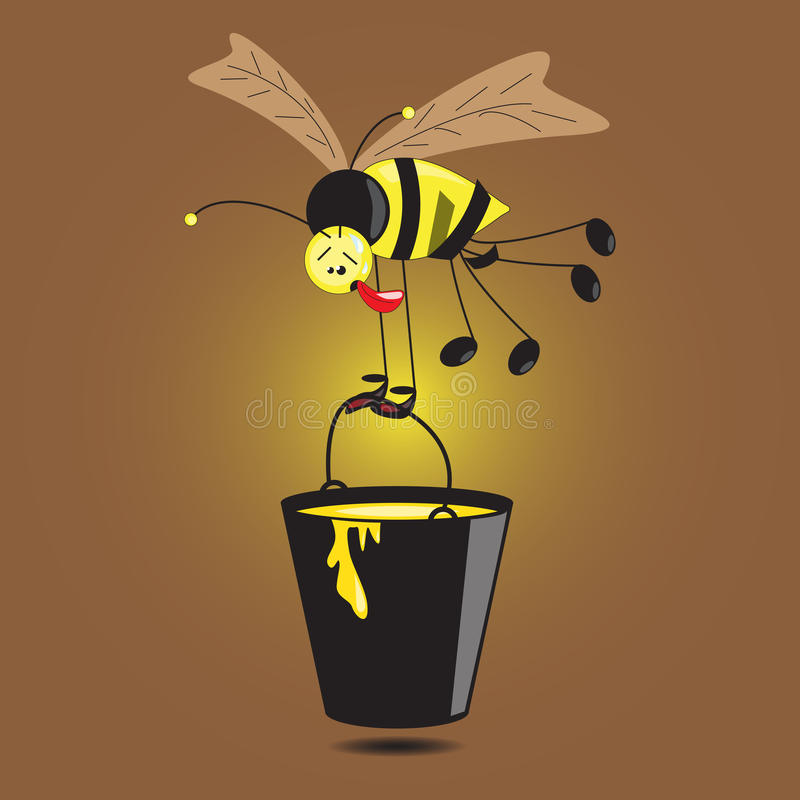

Las abejitas se cansan tanto buscar comida, porque cada vez hay menos flores disponibles

|
| |
| Si no tienes flores, puedes dejarle un plato con agua y azucar, pero con paja para que puedan detenerse ahi | Las abejitas se cansan tanto buscar comida, porque cada vez hay menos flores disponibles |